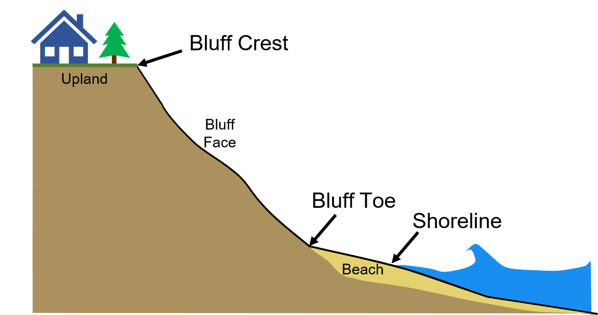

Coastal Recession Information
Lake Michigan coastal bluff and shoreline recession information is provided for Kenosha, Racine, Milwaukee, and Ozaukee Counties (collectively called “southeastern Wisconsin”). Data shown represents the distance the bluff or shoreline has receded, or moved landward, over two analysis periods: a long-term period from 1956 to 2015 and a short-term period from 1995 to 2015. Recession information is provided for the bluff crest and the bluff toe or, in areas that lack a bluff, the shoreline, defined as follows:
Bluff Crest: the location where the relatively flatter upland meets the steeper bluff face
Bluff Toe: the location where the bluff face meets the beach
Shoreline: the location where the beach meets the water
The coastal recession information was produced as a part of ongoing studies at the University of Wisconsin-Madison Coastal Sustainability Laboratory. This data has been made public through collaborations of the University of Wisconsin-Madison, the Wisconsin Coastal Management Program, University of Wisconsin Sea Grant, and the Association of State Floodplain Managers. The data presented here should be considered preliminary and may not reflect current conditions along the coast.
Recession Data Layers
The following recession measurements are available for viewing.
| Layer | Description |
|---|---|
| Bluff Toe Recession Long-term (1956 – 2015) |
The distance the bluff toe has moved landward between 1956 and 2015. |
| Bluff Crest Recession Long-term (1956 - 2015) |
The distance the bluff crest has moved landward between 1956 and 2015. |
| Shoreline Recession Long-term (1956 - 2015) |
The distance the shoreline has moved landward between 1956 and 2015. |
| Bluff Toe Recession Short-term (1995 – 2015) |
The distance the bluff toe has moved landward between 1995 and 2015. |
| Bluff Crest Recession Short-term (1995 - 2015) |
The distance the bluff crest has moved landward between 1995 and 2015. |
| Shoreline Recession Short-term (1995 - 2015) |
The distance the shoreline has moved landward between 1995 and 2015. |
| Shoreline Position (2015) | The location where the beach met the water, as measured in 2015 aerial photographs |
Each data point represents an average of recession measurements along a 300-foot section of coast and does not represent any specific property or municipal boundaries. By clicking on a point, the actual average measured recession distance and an average annual rate of recession can be viewed. Note that a positive recession value represents a landward movement of the feature and a negative recession value represents a lakeward movement of the feature, also known as accretion.
The recession information can provide useful insights into the historic migration of the southeastern Wisconsin coast. It should be noted that the recession distances provided here represent how the bluffs and shorelines have responded to historic environmental conditions and human actions over a specific time period in the past (1956-2015 and 1995-2015). There is always uncertainty in how bluff and shoreline recession will respond to future conditions. Bluff recession can also be sporadic. For example, a bluff crest that had remained unchanged for decades can recede many feet almost instantly due to a bluff collapse. Human actions may also change the evolution of the coast. For example, a bluff that may have been heavily eroded historically may have been recently stabilized or had shore protection added such that recession could be expected to decrease compared to historic rates.
Disclaimer
Please note that the data presented here should be considered preliminary and may not reflect current conditions along the coast. Care should be exercised in interpreting these data based on knowledge of coastal geology, engineering and mapping. Site assessments may be necessary to property interpret this data. As the Lake Michigan coast is a dynamic and constantly changing environment, one should consider consulting with local authorities and qualified professionals before building or making other land use decisions along the coast.
Methods
Bluff recession distances were measured from historical aerial photos in Geographic Information System (GIS) software for two analysis periods: 1956-2015 and 1995-2015. Using GIS software, photos from each year are georeferenced to position them accurately in space and orthorectified to remove vertical distortions caused by the camera lens. The bluff crest, bluff toe, and shoreline are carefully traced on each photo. The bluff crest is identified as the break in slope between the upland and the bluff slope, the bluff toe is identified as the break in slope between the bluff slope and beach, and the shoreline is defined as the location that appears as the interface between the water and the land at the time the photo was acquired. Differences in soil color, vegetation or other indicators are used to distinguish the features on each photo. Once each feature is digitized, the Digital Shoreline Analysis System (DSAS) software is used to measure the location of each digitized feature along transect lines spaced at 10-meter intervals along the shoreline. The data presented here shows recession data which have been spatially averaged along 300-foot sections of coast. The data shown on this data viewer therefore represents average recession over a distance wider than a typical single lot, parcel, or shoreline frontage, and not at a specific parcel or location on the coast.
Measurement Uncertainty
Uncertainty is inherent in any measurement. Errors during the digitization process of coastal features are the primary source of uncertainty for these bluff recession measurements. The most important sources of uncertainty during the digitization process are georeferencing errors of older photographs, photo resolution and/or quality, and visual obstruction of features in photos (i.e., dense forests concealing the bluff crest). Approximate uncertainty in the long-term recession distances is ±4 feet (±0.07 ft/year for recession rate) and in the short-term recession distances ±2 feet (±0.1 ft/yr for recession rate). Uncertainty values may be higher in some areas that suffer from image quality issues.
Funding
Funded by the Wisconsin Coastal Management Program and the National Oceanic and Atmospheric Administration, Office for Coastal Management under Grant # NA17NOS4730144